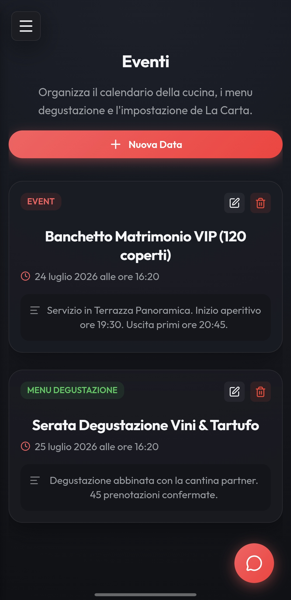
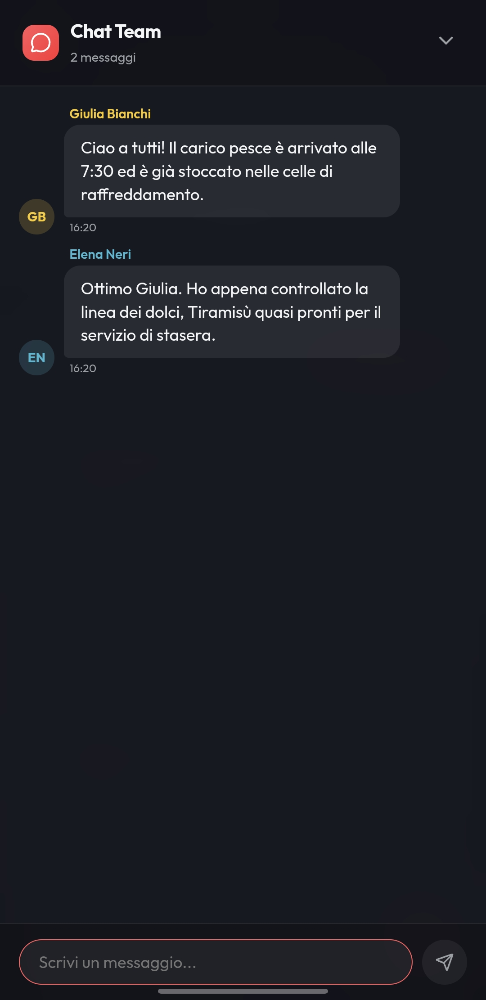

Gestione professionale, reinventata.
Una Web App reattiva ed elegante progettata per semplificare l'inventario in tempo reale, la gestione del ricettario, le liste di preparazione (Prep-List) ed i menu degustazione. Installabile come PWA.

Tutto ciò di cui la tua cucina ha bisogno.
Una piattaforma integrata per eliminare il disordine e mantenere la brigata sincronizzata.
Magazzino & Inventario
Tracciamento delle giacenze in tempo reale, avvisi di sottoscorta ed una griglia ottimizzata appositamente per smartphone.
Ricettario & Dosaggi
Schede tecniche dettagliate per ogni piatto con procedurali, grammature precise e foto in alta definizione.
Carte & Degustazione
Organizza i menu del ristorante, inclusi i percorsi Degustazione con associazioni dirette ai piatti del ricettario.
Prep-List
Organizza il lavoro della brigata suddiviso per data o linea di servizio. Form di aggiunta rapido e spunta visiva.
Eventi & Prenotazioni
Pianifica banchetti e serate speciali collegando direttamente la spesa ed i task agli eventi in programma.
PWA & Chat
Installa l'app nativamente su iOS, Android o Desktop. Comunica velocemente grazie alla chat di brigata integrata.
Progettata per l'uso sul campo.
Design curato nei minimi dettagli per un'esperienza fluida anche durante il servizio.




Avvio Rapido con Docker
Esegui semplicemente il deployment tramite Docker Compose su qualsiasi server o Raspberry Pi.
# Clonazione del repository
git clone https://github.com/giosci1994/kitchen-app.git
cd kitchen-app
# Avvio del container
docker compose up -d --build
# Inizializzazione Database & Demo Data
docker compose exec app npx prisma migrate deploy
docker compose exec app node scripts/seed-demo.jsAssicurati di aver configurato il file .env seguendo le istruzioni nel repository.
Pronto a modernizzare la cucina?
Tutto il codice è open source e disponibile gratuitamente su GitHub.